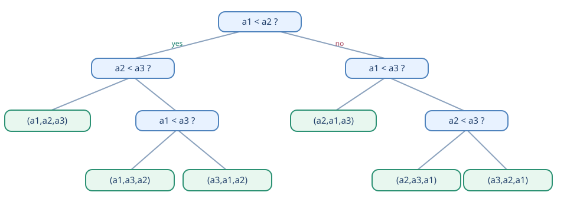

مرتبسازی در زمان خطی
از کران پایینِ روشهای مقایسهای تا Counting Sort و Radix Sort
مرتبسازی در زمان خطی
جزوهٔ خودآموز درس الگوریتم و ساختمان داده
بر پایهٔ فایل Sorting.pdf، شامل ۲۵ اسلاید «Sorting in Linear Time»
این جزوه برای کسی نوشته شده است که مرتبسازی درجی، ادغامی و سریع را در حد مقدماتی دیده است. مسیر درس از یک پرسش شروع میشود: اگر مرتبسازی مقایسهای در بدترین حالت به زمان نیاز دارد، چطور Counting Sort و Radix Sort گاهی در زمان خطی کار میکنند؟ پاسخ در فرضهای اضافی دربارهٔ کلیدها و روش بهدستآوردن اطلاعات ترتیب است.
نقشهٔ راه
| بخش | اسلایدهای منبع | پرسش اصلی |
|---|---|---|
| مرور الگوریتمها و کران پایین | ۱ تا ۱۱ | چرا مقایسه بهتنهایی کافی نیست که از سریعتر شویم؟ |
| Counting Sort و پایداری | ۱۲ تا ۲۰ | چگونه از مقدار کلید برای جایگذاری مستقیم استفاده کنیم؟ |
| Radix Sort | ۲۱ تا ۲۴ | چگونه چند مرتبسازی پایدار، عددهای چندرقمی را مرتب میکنند؟ |
| جمعبندی و خودآزمایی | ۲۵ و تمرینهای تکمیلی | چه زمانی از هر روش استفاده کنیم؟ |
راهنمای برچسبها. «از اسلاید» یعنی ادعا، مثال یا پرسشی که در فایل اصلی آمده است. «تکمیلی» یعنی توضیح، مثال یا تمرینی که برای خودآموز شدن جزوه افزوده شده است. «اصلاح اسلاید» یعنی متن یا شبهکد اسلاید ابهام یا ناسازگاری دارد و اینجا شکل درست آن جداگانه توضیح داده شده است.
قراردادها. تعداد عناصر، بزرگترین کلید در بازهٔ ، و تعداد رقمهاست. برای Counting Sort، آرایهٔ ورودی ، خروجی ، و شمارنده است. اندیسها در مثالها از ۱ شروع میشوند، اما کلیدها میتوانند صفر باشند. نمادهای ، و بهترتیب کران بالا، کران پایین و کران هممرتبهٔ مجانبی را نشان میدهند.
مرز محتوا: فایل اصلی فقط این سه محور را درس میدهد: کران پایین مرتبسازی مقایسهای، Counting Sort و Radix Sort. موضوعهایی مثل Bucket Sort یا روشهای مرتبسازی اعشاری در فایل نیستند و در این جزوه هم بهعنوان محتوای اسلاید معرفی نشدهاند.
۱. چرا مرتبسازی مقایسهای کران پایین دارد؟
۱٫۱ مرور روشهایی که تا اینجا دیدهایم
از اسلایدهای ۲ تا ۴. مرتبسازی درجی در بهترین حالت ، و در بدترین و میانگین حالت است. Merge Sort آرایه را دو نیم میکند، هر نیمه را بازگشتی مرتب میکند و آنها را در زمان خطی ادغام میکند؛ بدترین زمان آن است. Quicksort با انتخاب یک محور، افراز آرایه و فراخوانی بازگشتی کار میکند؛ نسخهٔ تصادفی آن زمان موردانتظار دارد، اما بدترین حالتش است.
| روش | بهترین | بدترین | میانگین/موردانتظار | مبنای تشخیص ترتیب |
|---|---|---|---|---|
| Insertion Sort | مقایسه | |||
| Merge Sort | مقایسه | |||
| Randomized Quicksort | موردانتظار | مقایسه |
شهود. مرتبسازی درجی روی دادهٔ ازپیشمرتبشده فقط همسایهها را میسنجد؛ اما اگر عناصر برعکس باشند، هر عنصر باید از چند عنصر عبور کند. Merge Sort حتی در حالت خوب نیز همهٔ سطوح تقسیم و ادغام را انجام میدهد. تصادفیسازی Quicksort احتمال افرازهای بد را کم میکند، نه اینکه بدترین حالت را حذف کند.
۱٫۲ مدل مقایسه و پرسش اسلاید
از اسلاید ۵. در «مرتبسازی مقایسهای»، الگوریتم فقط از مقایسهٔ دوتایی کلیدها میفهمد کدام باید زودتر بیاید. پرسش اسلاید: «چرا دستکم به تعداد خطی مقایسه لازم است و بهترین زمان ممکن چیست؟»
پاسخ مرحلهای. برای عنصر متمایز، ترتیب اولیهٔ ممکن وجود دارد. یک مقایسهٔ بله/خیر، حداکثر یک بیت از ابهام را رفع میکند. برای تمایز حالت، شمار مقایسههای بدترین مسیر باید دستکم باشد. این مقدار از هم بزرگتر میشود و مرتبهاش است.
اصلاح اسلاید ۵: عبارت «at least n comparisons» برای هر دقیق نیست؛ مثلاً مرتبکردن دو عنصر با یک مقایسه ممکن است. گزارهٔ دقیقِ ساده برای الگوریتم مقایسهای، حداقل مقایسه در بدترین حالت است؛ کران قویتر در ادامه است. منظور آموزشی اسلاید، نیاز به تعداد خطی مقایسه بوده است.
۱٫۳ درخت تصمیم
از اسلایدهای ۶ تا ۸. اجرای یک الگوریتم مقایسهای را میتوان به صورت درخت دودویی دید. هر گره یک مقایسه است؛ هر یال یکی از دو نتیجهٔ آن و هر برگ یک ترتیب نهایی را مشخص میکند. در اسلاید ۷ برای سه عنصر ، یک الگوریتم فرضی به نام X نمایش داده شده؛ در اسلاید ۸ درخت تصمیم Insertion Sort برای همان سه عنصر آمده است. درختها شکل یکسانی ندارند، اما هر دو باید بتوانند شش حالت را از هم تشخیص دهند.

مثال تکمیلی. فرض کن را بپرسیم. اگر درست باشد، هنوز سه ترتیب سازگار داریم: ، و . مقایسهٔ دوم میتواند باشد؛ اگر درست شد پاسخ قطعی است، وگرنه برای تفکیک دو حالت باقیمانده باید را هم بپرسیم. بنابراین بعضی ورودیها به سه مقایسه نیاز دارند. درخت اسلاید ۷ نیز همین پدیده را با شاخهبندی دیگری نشان میدهد.
رابطهٔ عمق و هزینه. تعداد مقایسههای بدترین ورودی برابر عمق عمیقترین برگ است. اگر همهٔ جایگشتها را با احتمال یکسان در نظر بگیریم، میانگین تعداد مقایسهها برابر میانگین عمق برگهای متناظر است. برگ کمعمق برای یک ورودی، وجود برگهای عمیقتر را نفی نمیکند.
۱٫۴ اثبات کران پایین، گامبهگام
از اسلایدهای ۹ و ۱۰. اگر عمق درخت باشد، حداکثر برگ دارد. چون برای عنصر متمایز دستکم برگ لازم است، باید:
اکنون نشان میدهیم این عدد است. در حاصلضرب ، دستکم عاملِ انتهایی هرکدام حداقل هستند؛ برای سادگی را زوج میگیریم. پس:
بنابراین هر الگوریتمی که تنها از مقایسه برای کسب اطلاعات ترتیب استفاده کند، در بدترین حالت مقایسه نیاز دارد. این استدلال دربارهٔ کلیدهای متمایز است؛ همین زیرمجموعهٔ ورودیها برای اثبات کران بدترین حالت کافی است.
از اسلاید ۱۱. Merge Sort با کران بالای به این کران پایین میرسد؛ پس از دید مرتبهٔ مجانبی، یک مرتبسازی مقایسهای بهینه است. «بهینه» در اینجا یعنی مرتبهٔ زمانی بهتر در مدل مقایسهای وجود ندارد، نه اینکه در هر دستگاه و برای هر ورودی سریعترین اجرا را داشته باشد.
اصلاح اسلاید ۲۵: Quicksort تصادفی در امید ریاضی و از این نظر هممرتبه با کران پایین است؛ بدترین حالت آن باقی میماند. پس جملهٔ «Merge Sort و Quick Sort هر دو بهینهاند» باید با این تفاوت خوانده شود.
مکث و خودآزمایی
- چرا داشتن برگ به معنای نیاز به مقایسه نیست؟
- برای سه عنصر متمایز، کران اطلاعاتی چند مقایسه در بدترین حالت میدهد؟
پاسخ کوتاه: ۱) هر مقایسه یک گره در یک مسیر است؛ تعداد برگها کل حالتهای ممکن است، و عمق لازم فقط لگاریتم تعداد برگهاست. ۲) .
۲. Counting Sort: مرتبسازی با شمردن
۲٫۱ فرض مسئله و ایده
از اسلاید ۱۲. فرض کنید کلید صحیح داریم و هر کلید در بازهٔ است. بهجای مقایسهٔ کلیدها با یکدیگر، تعداد وقوع هر مقدار را میشماریم. سپس با جمع تجمعی میفهمیم آخرین جای مجاز هر مقدار در خروجی کجاست.
برای مقدار ، عبارت پس از مرحلهٔ جمع تجمعی یعنی «چند ورودی مقدارشان حداکثر است؟» بنابراین آخرین باید در خانهٔ شمارهٔ خروجی قرار گیرد. بعد از قرار دادن آن، را یکی کم میکنیم تا بعدی در جای قبلی بنشیند.
تفاوت با مقایسه. الگوریتم از مقدار عددی کلید بهعنوان اندیس آرایه استفاده میکند. این فرض قویتر از «میتوان دو کلید را مقایسه کرد» است؛ بنابراین کران پایین فصل قبل را نقض نمیکند.
تکمیلی — دربارهٔ رتبه در اسلاید ۱۲: اسلاید میگوید رتبهٔ برابر تعداد عناصر کوچکتر از آن بهعلاوهٔ یک است. این برای کلیدهای متمایز کافی است. با کلیدهای تکراری، چند عنصر رتبهٔ یکسان میگیرند؛ آرایهٔ شمارنده و کاهش تدریجی آن جای آنها را جدا میکند.
۲٫۲ سه مرحلهٔ الگوریتم
از اسلایدهای ۱۳ و ۱۷، با اصلاح اندیسگذاری:
CountingSort(A[1..n], k):
B[1..n] ← آرایهٔ خروجی
C[0..k] ← همه صفر
برای j از 1 تا n:
C[A[j]] ← C[A[j]] + 1
برای x از 1 تا k:
C[x] ← C[x] + C[x−1]
برای j از n تا 1، رو به عقب:
x ← A[j]
B[C[x]] ← A[j]
C[x] ← C[x] − 1
B را برگردان
در نسخهٔ رکوردی، را از کلید رکورد میگیریم ولی خود رکورد کامل را در میگذاریم. اگر فقط مقدارها را ذخیره کنیم، پایداری دیده نمیشود؛ معنی پایداری وقتی روشن میشود که رکوردها اطلاعات دیگری هم داشته باشند.
اصلاح اسلایدهای ۱۳ و ۱۷: در اسلاید ۱۳ اندازهٔ بهاشتباه توصیف شده، در حالی که برای کلیدهای باید خانه داشته باشد. در شبهکد اسلاید ۱۷ مقداردهی از ۱ و جمع تجمعی از ۲ شروع میشود، اما مثال همان اسلایدها کلید صفر دارد. شبهکد بالا از شروع میکند و با همان مثال سازگار است. در اسلاید ۱۳ یک کروشهٔ دستور جایگذاری هم افتاده است.
۲٫۳ مثال کامل اسلایدهای ۱۴ تا ۱۶
از اسلاید. ورودی با اندیسهای ۱ تا ۸ چنین است:
در مرحلهٔ شمارش، برای کلیدهای صفر تا پنج داریم:
| کلید | ۰ | ۱ | ۲ | ۳ | ۴ | ۵ |
|---|---|---|---|---|---|---|
| تعداد اولیه | ۲ | ۰ | ۲ | ۳ | ۰ | ۱ |
| تعدادِ حداکثر | ۲ | ۲ | ۴ | ۷ | ۷ | ۸ |
در اسلاید ۱۴، از انتهای ورودی یعنی شروع میشود: چون ، این ۳ در مینشیند و از ۷ به ۶ میرسد. اسلایدهای ۱۵ و ۱۶ دو حرکت بعدی را نشان میدهند: در ، سپس در . جدول زیر کل حرکتها را کامل میکند:
| اندیس ورودی | کلید | جای خروجی پیش از کاهش | وضعیت تازهٔ همان شمارنده |
|---|---|---|---|
| ۸ | ۳ | ||
| ۷ | ۰ | ||
| ۶ | ۳ | ||
| ۵ | ۲ | ||
| ۴ | ۰ | ||
| ۳ | ۳ | ||
| ۲ | ۵ | ||
| ۱ | ۲ |
پس پاسخ نهایی است. دقت کن شمارندهٔ تجمعی بعد از جایگذاری تغییر میکند؛ بنابراین اگر بخواهی همان جدول «تعداد حداکثر » را دوباره استفاده کنی، باید نسخهای از آن را نگه داری.
۲٫۴ چرا درست است و چرا پایدار است؟
استدلالِ درستی. پس از جمع تجمعی، تعداد کل عناصر با مقدار است. پس عناصر باید درست بعد از عناصر کوچکتر از و حداکثر تا خانهٔ قرار گیرند. هر بار که یک قرار میگیرد، شمارنده یکی کم میشود؛ در نتیجه عناصر هممقدار در خانههای متفاوت و پشتسرهم مینشینند. همهٔ خانهها دقیقاً یک بار پر میشوند.
از اسلایدهای ۱۸ و ۱۹. مرتبسازی پایدار است اگر دو رکورد با کلید مساوی، ترتیب نسبی خود را حفظ کنند. در مثال اسلاید ۱۹، ورودیِ برچسبدار چنین است:
2₁ 7₁ 4₁ 4₂ 2₂ 5₁ 2₃ 6₁
و خروجی پایدار باید چنین باشد:
2₁ 2₂ 2₃ 4₁ 4₂ 5₁ 6₁ 7₁
چرا حرکت از راست به چپ لازم است؟ اگر و هر دو کلید دارند، رکورد زودتر پردازش میشود و در آخرین جای آزاد مینشیند. سپس شمارنده کم میشود و رکورد در جای قبلی مینشیند؛ پس همچنان پیش از خواهد بود. اگر همین نسخه را از چپ به راست اجرا کنیم، ترتیب مساویها برعکس میشود.
۲٫۵ زمان، حافظه و محدودیت عملی
از اسلایدهای ۱۷، ۱۸ و ۲۰. صفرکردن و جمع تجمعی روی خانه زمان میبرند؛ دو گذر از عنصر هستند. پس زمان و حافظهٔ اضافه است. فقط وقتی باشد میتوان آن را نسبت به تعداد ورودیها نامید.
پرسش اسلاید ۲۰: «چرا همهٔ عددهای ۳۲بیتی را همیشه با این روش مرتب نمیکنیم؟» اگر دامنهٔ کلیدها نزدیک باشد، آرایهٔ به میلیاردها خانه نیاز دارد. حتی با شمارندههای چهاربایتی، فقط خود حدود ۱۶ گیبیبایت حافظه میخواهد. بنابراین هزینهٔ ممکن است بسیار بیشتر از شود. برای دامنهٔ بزرگ، Radix Sortِ بخش بعد میتواند راه دیگری باشد.
تکمیلی — شرطهای پنهان: کلید منفی را نمیتوان مستقیم اندیس کرد؛ میتوان با یک جابهجایی ثابت، بازهٔ محدود را به برد. این تغییر همچنان به پهنای بازه وابسته است. همچنین کلیدها باید صحیح یا قابل تبدیل به تعداد محدودی دسته باشند.
پرسش اسلاید ۱۷
زمان اجرا چقدر است؟ پاسخ: ، زیرا سه گذرِ ، و انجام میشود. گفتن بدون شرطی روی درست نیست.
۳. Radix Sort: مرتبسازی رقمبهرقم
۳٫۱ چرا از یک رقم شروع میکنیم؟
از اسلاید ۲۱. فرض کنید هر کلید رقم دارد و هر رقم از است. مثلاً برای اعداد دهدهی، . Radix Sort نوع LSD در اسلاید، از کمارزشترین رقم شروع میکند و در هر مرحله همهٔ رکوردها را بر اساس یک رقم، با یک روش پایدار مرتب میکند. Counting Sortِ بخش قبل میتواند مرتبسازی هر مرحله باشد.
شهود تکمیلی. پس از مرحلهٔ یکان، عناصر بر اساس یک رقم آخر مرتباند. پس از مرحلهٔ دهگان، دهگان معیار اصلی میشود و پایداری ترتیب یکان را میان عناصری که دهگان برابر دارند نگه میدارد. بعد از صدگان، سه رقم آخر بهترتیب درستاند. پس ترتیب کامل با افزایش تعداد رقمهای بررسیشده ساخته میشود.
۳٫۲ شبهکد و ناوردای درستبودن
از اسلاید ۲۲.
RadixSort(A, d):
برای i از 1 تا d: # i=1 یعنی کمارزشترین رقم
A ← StableSortByDigit(A, i) # مثلاً Counting Sort روی همان رقم
A را برگردان
ناوردا: پس از دور ، آرایه بر اساس رقم کمارزشتر مرتب است. پایهٔ استقرا است. در گام بعد، مرتبسازی بر اساس رقم ، عناصر را به گروههای آن رقم میبرد؛ در هر گروه، پایداری ترتیب قبلیِ رقم را نگه میدارد. پس کل رقم درست مرتب میشوند.
اشتباه رایج: اگر در هر مرحله از مرتبسازی ناپایدار استفاده شود، مرحلهٔ دهگان ممکن است ترتیبِ یکان را میان دو عدد با دهگان مساوی بههم بزند. صرفاً «مرتب بودن پس از هر گذر» کافی نیست؛ ترتیب نسبی کلیدهای مساویِ همان گذر مهم است.
۳٫۳ مثال کامل اسلاید ۲۳
از اسلاید. هفت عدد سهرقمی ورودی:
| مرحله | آرایه پس از مرتبسازی پایدار | توضیح |
|---|---|---|
| آغاز | 329, 457, 657, 839, 436, 720, 355 | ترتیب اولیه |
| یکان | 720, 355, 436, 457, 657, 329, 839 | رقمهای یکان: 0،5،6،7،7،9،9 |
| دهگان | 720, 329, 436, 839, 355, 457, 657 | دهگان: 2،2،3،3،5،5،5؛ ترتیبِ قبلی در هر گروه حفظ شد |
| صدگان | 329, 355, 436, 457, 657, 720, 839 | ترتیب نهایی |
به جفت 457 و 657 دقت کن: هر دو یکان ۷ و دهگان ۵ دارند. پس در دو گذر اول همان ترتیب اولیه را حفظ میکنند. پس از گذر صدگان، چون 4<6 است، 457 پیش از 657 میماند. برای دیدن نقش واقعی پایداری، 329 و 839 را نگاه کن: پس از گذر دهگان در گروههای متفاوتاند، اما در گذر صدگان هر عدد در گروه صدگان خود قرار میگیرد و ترتیب دو رقم قبلی در همان گروه حفظ میشود.
مثال تکمیلی برای ضرورت پایداری. اعداد 21 و 22 پس از مرتبسازی یکان به صورت 21،22 هستند. هر دو دهگان ۲ دارند. اگر گذر دهگان ناپایدار باشد ممکن است 22،21 خروجی دهد که غلط است؛ روش پایدار ترتیب درست را حفظ میکند.
۳٫۴ زمان اجرا و شرایط خطی بودن
از اسلاید ۲۴. اگر هر گذر با Counting Sort روی عنصر و رقمهای انجام شود، هزینهٔ هر گذر است. برای گذر:
اگر یک ثابت و باشد، این زمان است. اما اگر تعداد رقمها با ورودی رشد کند یا مبنای انتخابشده بسیار بزرگ باشد، نمیتوان بیقید آن را خطی نامید. حافظهٔ اضافه برای نسخهای که هر گذر را با Counting Sort انجام میدهد است و همان فضا را میتوان بین گذرها دوباره استفاده کرد.
پرسش اسلاید ۲۴: زمان Radix Sort چقدر است؟ پاسخ دقیق در همین پیادهسازی است. عبارت «سریع و پایدار» در اسلاید زمانی درست است که مرتبسازی هر رقم پایدار باشد و و برای اندازهٔ مسئله مناسب باشند.
تکمیلی — عددهای ۳۲بیتی: میتوان هر عدد را مثلاً به چهار رقمِ ۸بیتی تقسیم کرد. در این صورت و هر رقم یکی از ۲۵۶ مقدار است؛ هر گذر آرایهٔ شمارندهٔ کوچکی دارد. این مثال، پاسخ عملی پرسش اسلاید ۲۰ را تکمیل میکند؛ جزئیات نمایش عددهای علامتدار در اسلایدها نیامدهاند.
۴. جمعبندی و تمرین
۴٫۱ تصویر کلی درس
از اسلاید ۲۵. کران متعلق به الگوریتمهایی است که اطلاعات ترتیب را فقط از مقایسه میگیرند. Merge Sort در بدترین حالت به این کران میرسد. Counting Sort از دامنهٔ کوچک کلیدها و Radix Sort از نمایش چندرقمی کلیدها استفاده میکنند؛ در شرایط مناسب میتوانند نسبت به خطی باشند.
| ویژگی | مقایسهای، مثل Merge Sort | Counting Sort | Radix Sort با Counting Sort |
|---|---|---|---|
| اطلاعات ترتیب | مقایسهٔ دو کلید | مقدار صحیح کلید | رقمهای کلید |
| زمان | برای Merge Sort | ||
| شرط مهم | امکان مقایسه | دامنهٔ و حافظهٔ کافی | نمایش -رقمی و گذر پایدار |
| پایداری | به روش بستگی دارد | بله، با پیمایش معکوس | بله، اگر هر گذر پایدار باشد |
چکلیست انتخاب روش. پیش از آنکه بگویی «این روش خطی است»، بپرس: نسبت به چقدر است؟ ثابت است؟ آیا باید ترتیب رکوردهای همکلید حفظ شود؟ آیا حافظهٔ در دسترس است؟
۴٫۲ پرسشهای خود اسلایدها
۱. اسلاید ۵: بهترین زمان مرتبسازی مقایسهای چیست؟ در بدترین حالت حداقل و با Merge Sort حداکثر است؛ بنابراین مرتبهٔ بهینه است. عبارت «حداقل مقایسه» را به صورت کران خطیِ تقریبی بخوان؛ شکل دقیق آن در فصل ۱ آمده است.
۲. اسلاید ۱۷: زمان Counting Sort چیست؟ ، نه همیشه .
۳. اسلاید ۲۰: چرا Counting Sort مستقیم برای همهٔ عددهای ۳۲بیتی مناسب نیست؟ دامنهٔ کلیدها ممکن است مقدار داشته باشد؛ شمارندهٔ مستقیم بسیار بزرگ میشود.
۴. اسلاید ۲۴: زمان Radix Sort چیست؟ با Counting Sort پایدار در هر گذر است.
۴٫۳ تمرینهای تکمیلی
این تمرینها در اسلایدها نیستند و برای سنجش فهم افزوده شدهاند. ابتدا خودت حل کن؛ پاسخهای تشریحی در بخش بعد آمده است.
- برای چهار کلید متمایز، درخت تصمیم حداقل چند مقایسه در بدترین حالت لازم دارد؟ آیا این کران بهتنهایی الگوریتمی با همان تعداد مقایسه به ما میدهد؟
- روی ورودی با ، آرایهٔ شمارش و سپس آرایهٔ تجمعی را بنویس. از راست به چپ، جای هر عنصر را در تعیین کن.
- دو رکورد «۲-آبی» و «۲-قرمز» با کلید مساوی ۲، به همین ترتیب در ورودیاند. اگر مرحلهٔ نهایی Counting Sort را از چپ به راست اجرا کنی، چه اتفاقی میافتد؟
- ورودی را با Radix Sort دهدهی دو گذره مرتب کن؛ آرایه را پس از یکان و پس از دهگان بنویس.
- برای ، کدام گزینهٔ Counting Sort عملیتر است: کلیدهای یا ؟ دلیل را با زمان و حافظه توضیح بده.
- جملهٔ «Quicksort بهینه است» را طوری بازنویسی کن که با بدترین حالت آن تناقض نداشته باشد.
۴٫۴ پاسخ تشریحی تمرینها
۱. تعداد ترتیبها است، پس عمق درخت حداقل است. این یک کران پایین است؛ صرفاً از آن نمیفهمیم درختی با پنج مقایسه برای همهٔ ورودیها وجود دارد یا چگونه ساخته میشود.
۲. شمارش برای کلیدهای ۰ تا ۳ برابر و تجمعی برابر است. از راست به چپ: ، ، ، ، . در پایان .
۳. اگر از انتهای بازهٔ کلید ۲ شروع کنیم ولی ورودی را از چپ بخوانیم، آبی در جای بزرگتر و قرمز در جای کوچکتر قرار میگیرند؛ خروجیِ همکلیدها قرمز، آبی میشود. بنابراین این ترکیب از جهت پیمایش و شمارنده پایدار نیست.
۴. پس از یکانِ پایدار: ؛ زیرا یکانهای ۱ پیش از ۲ میآیند و ترتیب هر گروه حفظ میشود. پس از دهگان: . اگر گذر دوم ناپایدار باشد، ممکن است ترتیب 11 و 12 خراب شود.
۵. بازهٔ ۰ تا ۲۵۵ فقط ۲۵۶ شمارنده میخواهد و است. بازهٔ ۳۲بیتی ممکن است حدود شمارنده بخواهد؛ زمان مقداردهی و حافظهٔ آن نامتناسب با است.
۶. «Quicksort تصادفی از نظر زمان موردانتظار هممرتبه با کران پایین مرتبسازی مقایسهای است، اما بدترین حالتش است.»
۴٫۵ برگهٔ مرور یکدقیقهای
- مقایسهٔ دودویی درخت تصمیم حداقل برگ عمق .
- Counting Sort: بشمار، تجمعی کن، از راست به چپ جایگذاری کن؛ زمان ، حافظه ، پایدار.
- Radix Sort نوع LSD: از کمارزشترین رقم شروع کن و هر بار پایدار مرتب کن؛ زمان .
- «خطی» همیشه مشروط به اندازهٔ دامنهٔ کلید، تعداد رقمها و مدل ورودی است.